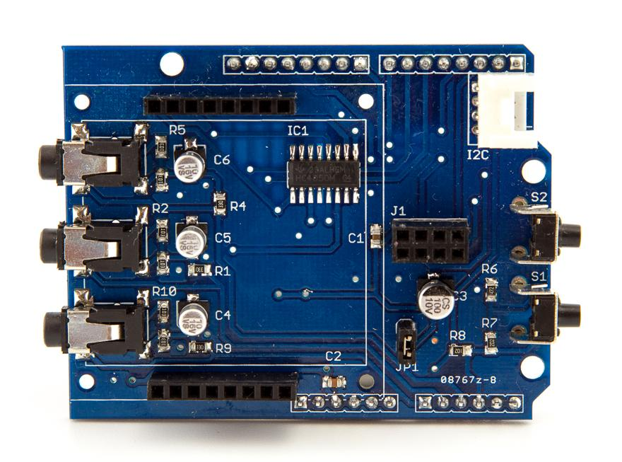
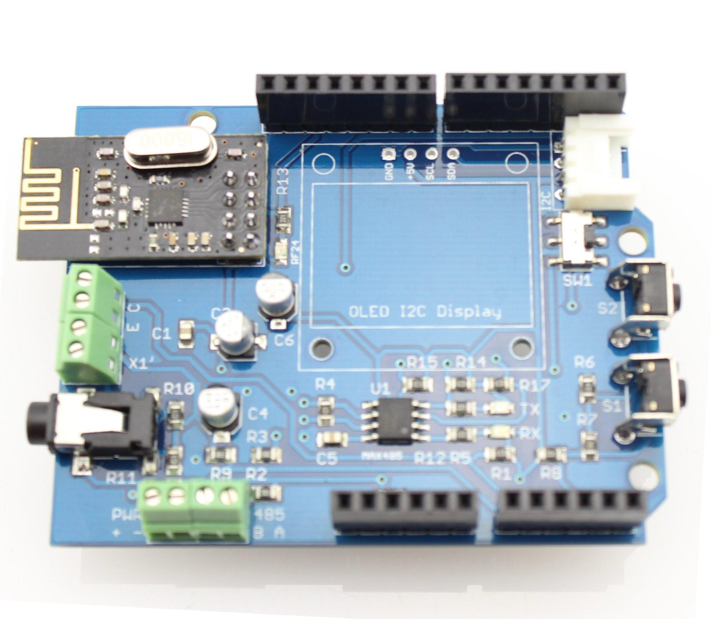

Energy Monitor Shield is an Arduino-compatible expansion card designed for building energy monitoring system with LCD screen and an interface for connecting the wireless transceiver nRF24L01 +.
|  |  |
Energy Monitor Shield V0.9b, V1.0, V1.0 rev 1
|
Here lists the comparison among various versions:
| Parameter | Energy Monitor Shield V09b | Energy Monitor Shield V1.0 | Energy Monitor Shield V1.0 rev1 | Energy Monitor Shield V1.1 rev1 | Energy Monitor Shield V2.0 |
|---|---|---|---|---|---|
| Product Release Date | 20.10.2013 | 01.04.2014 | 24.10.2014 | soon | 29.12.2014 |
| Production Status | Not produced | In production | In production | In production | In production |
| Тype RF module | nRF24L01 + | nRF24L01 + | nRF24L01 + | nRF24L01 + mini | nRF24L01 + |
| Auto LED RF activity | NO | NO | YES | YES | YES |
| Support display | LCD | LCD | LCD | LCD (brightness control) | OLED I2C (not included) |
| E2prom onboard (for OTA firmware updates) | NO | NO | NO | YES | NO |
| Support RS485 | NO | NO | NO | NO | MAX485 |
| Phase measurement | 3 | 3 | 3 | 3 | 1 |
| IR counter | NO | NO | NO | NO | YES |